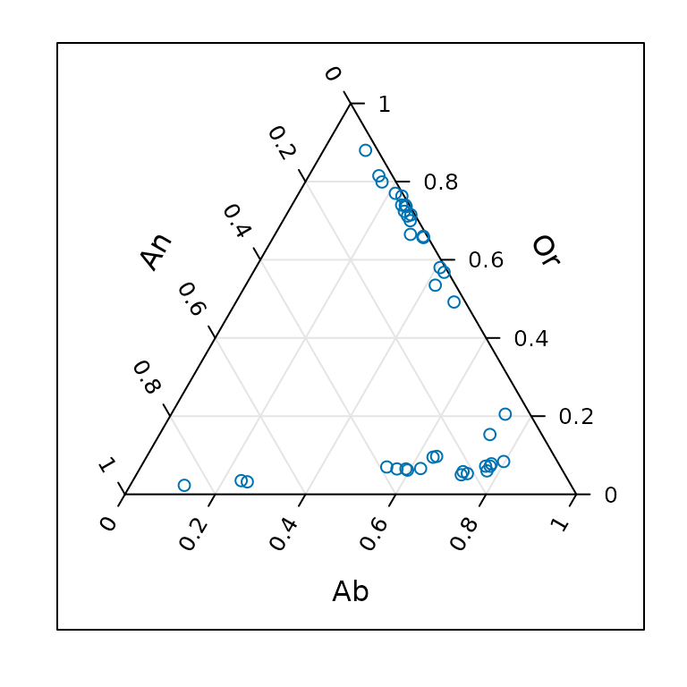
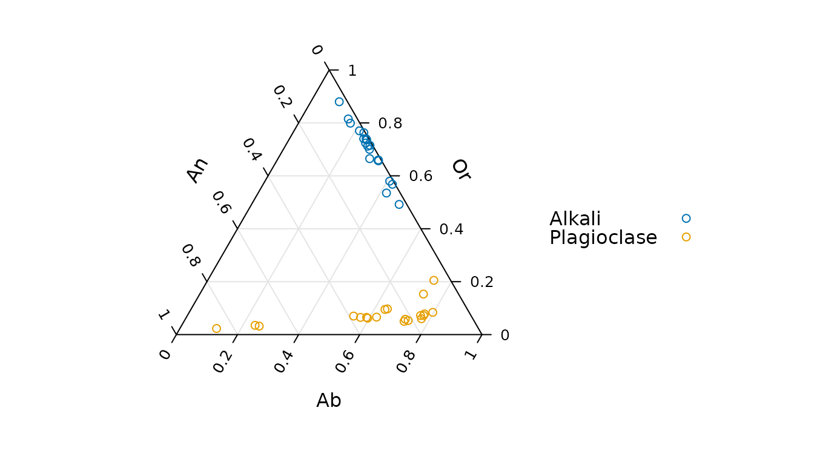
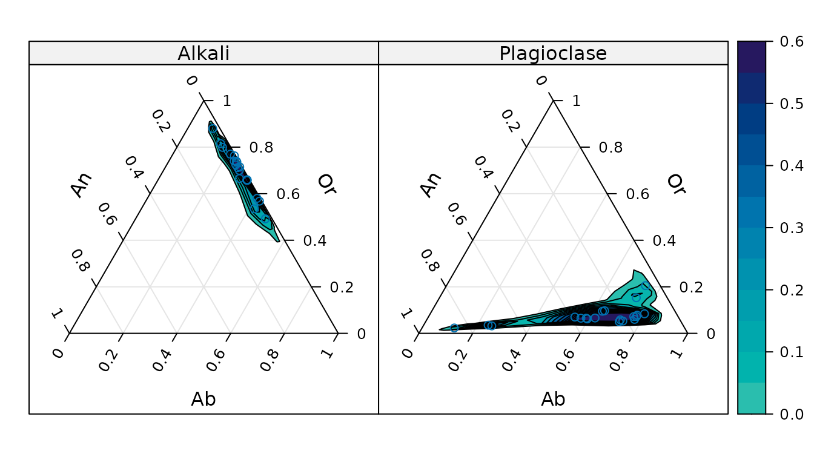
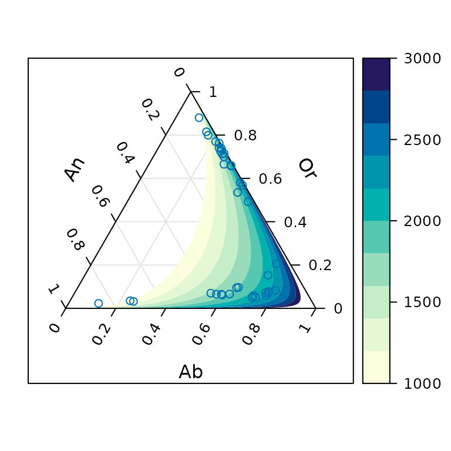
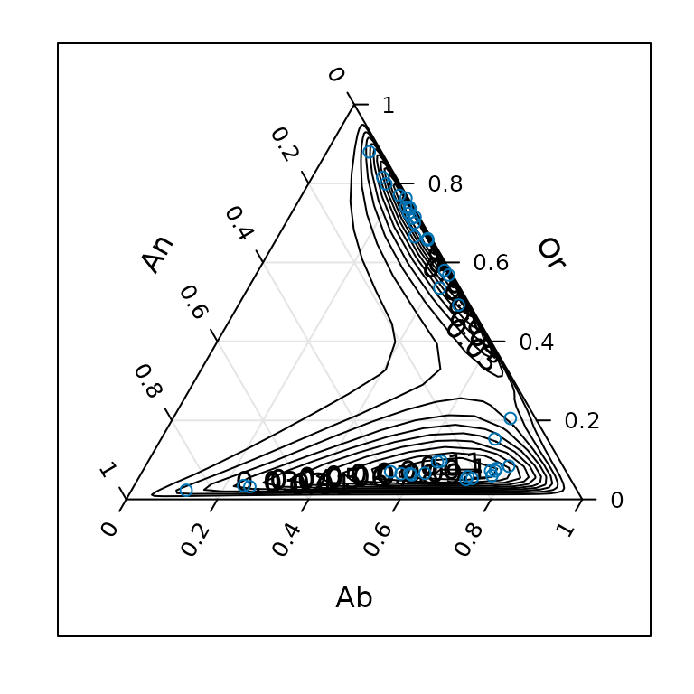
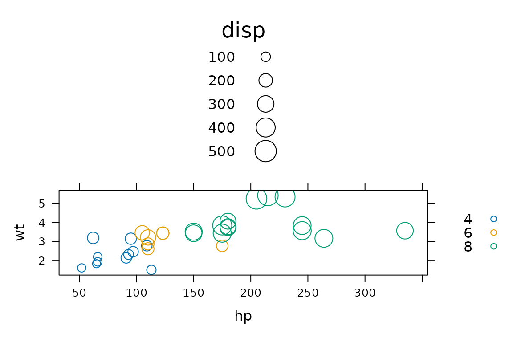
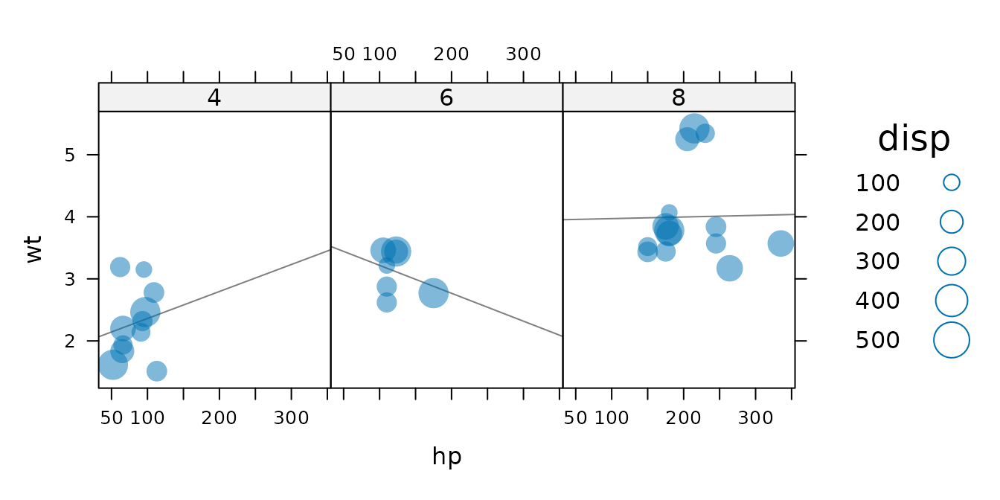

New high-level functions
tactile
Johan Larsson
2025-12-15
Source:vignettes/new-high-level-functions.Rmd
new-high-level-functions.Rmdtactile introduces a few new high-level functions to the latticeverse. This vignette will be updated as new functions are added.
ternaryplot(): Ternary plots
Ternary plots display proportions of three variables on a
two-dimensional grid are popular in compositional analysis. tactile can
be used to generate ternary plots with ternaryplot() which
takes formula, matrix, or data.frame objects an input. The formula
method – the focus of this vignette – used the form
top ~ left * right in terms of the dimensions of the
ternary diagram.
To showcase the use of ternaryplot() we’ll use data from
an article by Grove and Jenkins that has been imported into tactile and
made available simply by calling feldspar. We begin with
the simplest form of a ternary plot.
library(tactile)
#> Loading required package: lattice
ternaryplot(Or ~ An * Ab, data = feldspar)
All of the bells and whistles of lattice graphics are available in
tactile too, and we may benefit here by, for instance, grouping
variables by the coexisting feldspar factor
Feldspar. Here, we also remove the useless box around the
plot.
ternaryplot(Or ~ An * Ab,
groups = Feldspar, data = feldspar,
auto.key = list(space = "right"),
par.settings = list(axis.line = list(col = "transparent"))
)
Another feature to visualize the compositions, which would make more
sense with a larger dataset, is to add two-dimensional density
estimates. We do this by setting the density argument to
TRUE. Instead of superposing the two types of composite
feldspars, we now condition instead.
ternaryplot(Or ~ An * Ab | Feldspar, data = feldspar, density = TRUE)
These density estimations are produced by first applying a isometric
log transformation and then computing density estimates with
MASS::kde2d() before returning the coordinates to the
ternary coordinate space.
One more feature that is available is to model a response on our compositional data. We (obviously) need a separate outcome variable for this and will here use the temperature of the reaction from the feldspar experiments, offering examples of a version with region fills and one with contours.
ternaryplot(Or ~ An * Ab,
response = Pressure, data = feldspar,
contour = FALSE
)
ternaryplot(Or ~ An * Ab, response = Pressure, data = feldspar, region = FALSE)
bubbleplot(): Bubbleplots
Bubble plots are simple scatter plots that have been extended to a third dimensions by mapping a third variable to the size (area) of the plot symbols, which theoretically could be anything but usually is points. Bubble plots were made famous by the late Hans Rosling.
Bubble plots in tactile are available with bubbleplot()
and take a formula of the type bubblesize ~ x * y as its
first argument. We illustrate with with the mtcars data set
from R that sports the features of 32 cars from the
1974 Motor Trend US magazine. We start by mapping the
displacement to the bubble size against horsepower (hp) and weight
(wt).
bubbleplot(disp ~ hp * wt, groups = cyl, data = mtcars, auto.key = TRUE)
More elaborate designs can be fashioned if we were to combine the plot with some of the specialized panel functions from lattice. Here, we also change to a filled circle design with semitransparent bubbles.
bubbleplot(disp ~ hp * wt | factor(cyl),
data = mtcars, auto.key = TRUE,
pch = 16, alpha = 0.5, layout = c(3, 1),
panel = function(x, y, z, ...) {
panel.lmline(x, y, ...)
panel.bubbleplot(x, y, z, ...)
}
)